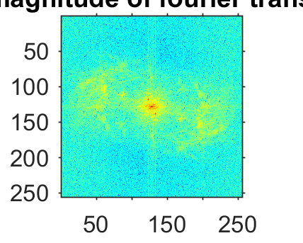
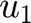
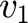
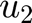
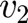
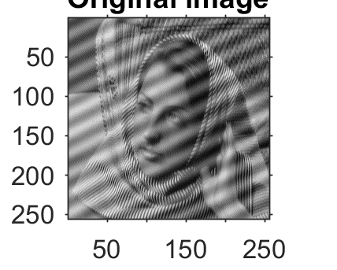
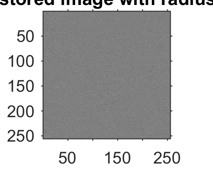
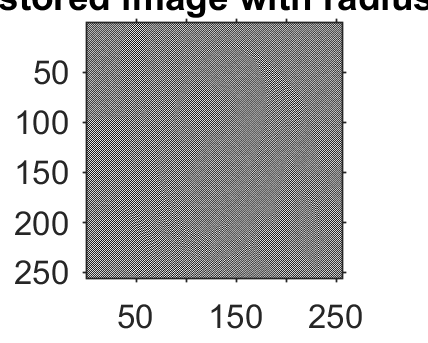

MyMainScript
Contents
Your code here
Question 3
Part 1 - to display the log magnitude of the Fourier Transform of the image.
load('../data/image_low_frequency_noise.mat');
Z1 = Z;
mx = max(max(Z1));
mn = min(min(Z1));
Z1 = (Z1 - mn)/(mx - mn);
Zf = fftshift(fft2(Z1));
Zf_log = log(abs(Zf + 1));
mxl = max(max(Zf_log));
mnl = min(min(Zf_log));
Zf_log = (Zf_log - mnl)/(mxl - mnl);
imshow(Zf_log);colormap('jet');
title('Log magnitude of fourier transform');

Part - 2
- We need to find the frequencies which are causing interference
- On observing the log magnitude of the fourier transform, we see that that there are peaks at pixels (139,134) and (119,124) apart from the center (129,129).
- The frequencies that determine the noise patterns are (, ) = (139,134) and (, ) = (119,124)
Part - 3
- Implementation of the notch filter to remove the interference pattern in the image.
- Using a radius of 4 and 7 below
figure(1);
imshow(Z1);
title('Original image');
x1 = notch(Zf,7);
figure(2);
imshow(x1);
title('restored image with radius 7');
x2 = notch(Zf,4);
figure(3);
imshow(x2);
title('restored image with radius 4');
  